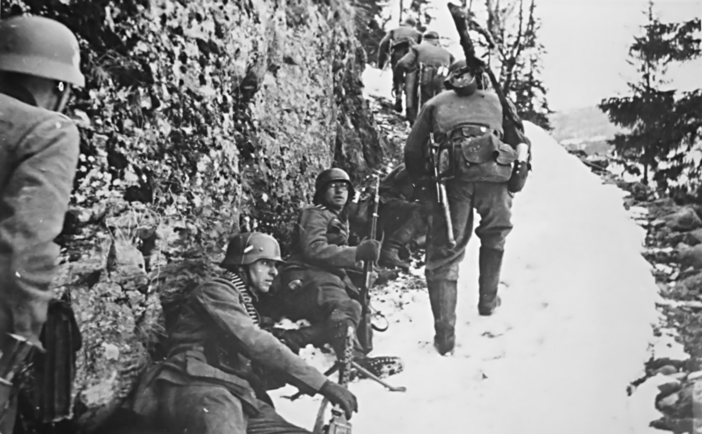
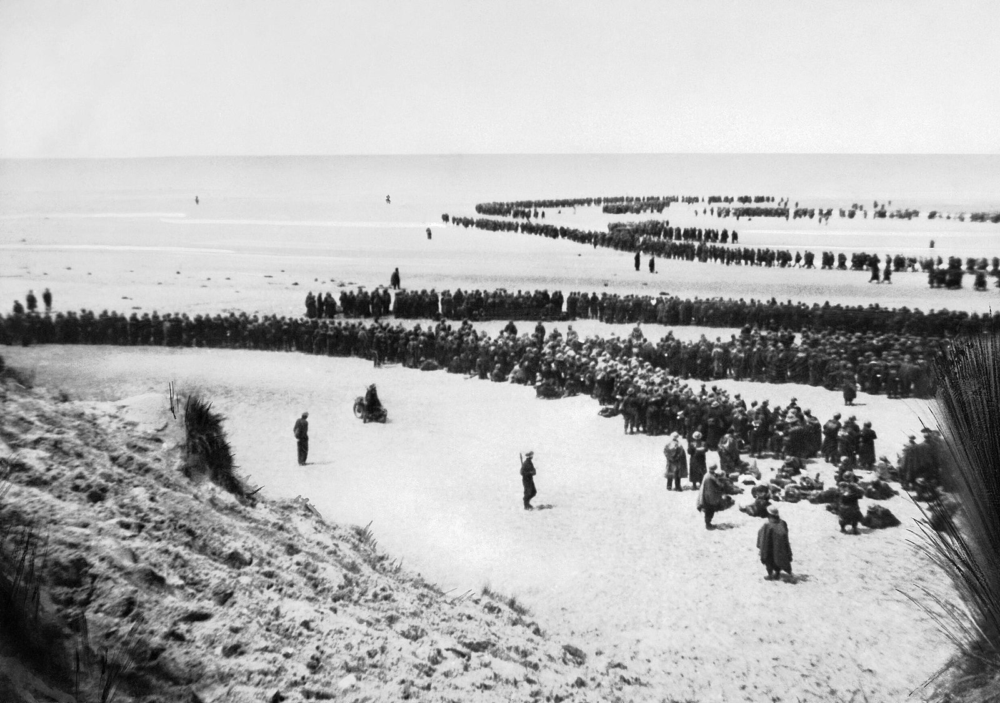
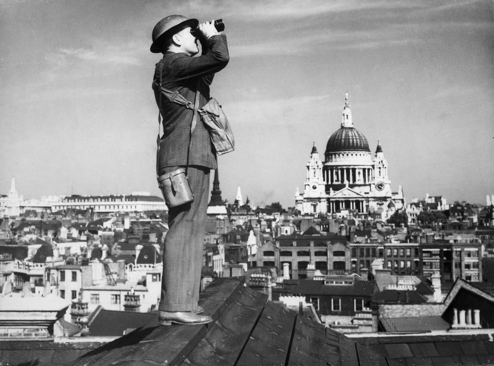
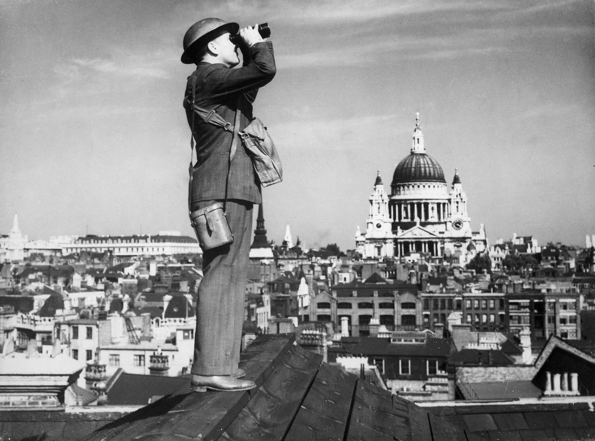
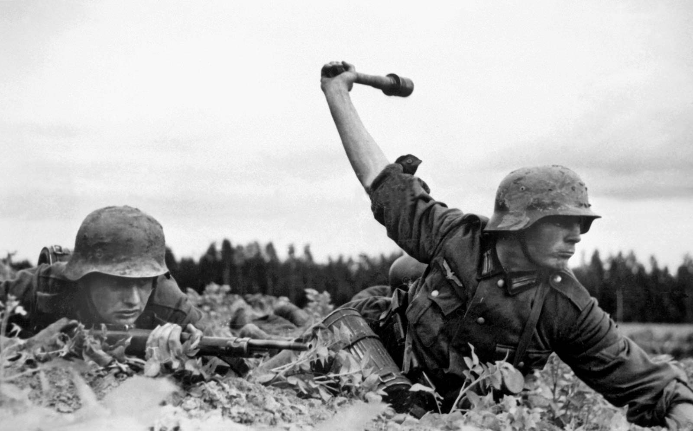
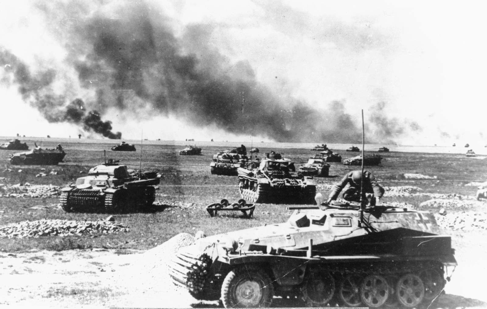

INVASION OF POLAND
The invasion of Poland, also known as September campaign (Polish: Kampania wrześniowa), 1939 defensive war (Polish: Wojna obronna 1939 roku) and Poland campaign (German: Überfall auf Polen, Polenfeldzug), was an attack on the Second Polish Republic by Nazi Germany and the Soviet Union which marked the beginning of World War II. The German invasion began on 1 September 1939, one week after the signing of the Molotov–Ribbentrop Pact between Germany and the Soviet Union, and one day after the Supreme Soviet of the Soviet Union had approved the pact. The Soviets invaded Poland on 17 September. The campaign ended on 6 October with Germany and the Soviet Union dividing and annexing the whole of Poland under the terms of the German–Soviet Frontier Treaty.
German forces invaded Poland from the north, south, and west the morning after the Gleiwitz incident. Slovak military forces advanced alongside the Germans in northern Slovakia. As the Wehrmacht advanced, Polish forces withdrew from their forward bases of operation close to the Germany–Poland border to more established defense lines to the east. After the mid-September Polish defeat in the Battle of the Bzura, the Germans gained an undisputed advantage. Polish forces then withdrew to the southeast where they prepared for a long defence of the Romanian Bridgehead and awaited expected support and relief from France and the United Kingdom. Those two countries had pacts with Poland and had declared war on Germany on 3 September; in the end their aid to Poland was very limited, however France invaded a small part of Germany in the Saar Offensive.
On 17 September, the Soviet Red Army invaded Eastern Poland, the territory beyond the Curzon Line that fell into the Soviet "sphere of influence" according to the secret protocol of the Molotov–Ribbentrop Pact; this rendered the Polish plan of defence obsolete. Facing a second front, the Polish government concluded the defence of the Romanian Bridgehead was no longer feasible and ordered an emergency evacuation of all troops to neutral Romania. On 6 October, following the Polish defeat at the Battle of Kock, German and Soviet forces gained full control over Poland. The success of the invasion marked the end of the Second Polish Republic, though Poland never formally surrendered.
On 8 October, after an initial period of military administration, Germany directly annexed western Poland and the former Free City of Danzig and placed the remaining block of territory under the administration of the newly established General Government. The Soviet Union incorporated its newly acquired areas into its constituent Byelorussian and Ukrainian republics, and immediately started a campaign of Sovietization. In the aftermath of the invasion, a collective of underground resistance organizations formed the Polish Underground State within the territory of the former Polish state. Many of the military exiles that managed to escape Poland subsequently joined the Polish Armed Forces in the West, an armed force loyal to the Polish government-in-exile.

German troops shown marching through Warsaw after their invasion of Poland

Adolf Hitler salutes parading troops of the German Wehrmacht in Warsaw, Poland.

Polish Infantry during the Invasion of Poland

German and Soviet officers shaking hands following the invasion of Poland.
OPERATION WESERÜBUNG
Operation Weserübung (German: Unternehmen Weserübung, transl. Operation Weser Exercise) was the code name for Germany's assault on Denmark and Norway during the Second World War and the opening operation of the Norwegian Campaign.
In the early morning of 9 April 1940 (Wesertag, "Weser Day"), Germany occupied Denmark and invaded Norway, ostensibly as a preventive manoeuvre against a planned, and openly discussed, Franco-British occupation of Norway known as Plan R 4 (actually developed as a response to any German aggression against Norway). After the occupation of Denmark (the Danish military was ordered to stand down as Denmark did not declare war with Germany), envoys of the Germans informed the governments of Denmark and Norway that the Wehrmacht had come to protect the countries' neutrality against Franco-British aggression. Significant differences in geography, location and climate between the two nations made the actual military operations very dissimilar.

BATTLE OF FRANCE
The Battle of France, also known as the Fall of France, was the German invasion of France, Belgium, Luxembourg and the Netherlands during the Second World War. On 3 September 1939, France had declared war on Germany, following the German invasion of Poland. In early September 1939, France began the limited Saar Offensive. By mid-October, the French had withdrawn to their start lines. The Germans invaded Belgium, Luxembourg and the Netherlands on 10 May, Italy entered the war on 10 June 1940 and German forces defeated the Allies on 25 June. France and the Low Countries were conquered, ending land operations on the Western Front until the Normandy landings on 6 June 1944.
In Fall Gelb (Case Yellow), German armoured units made a surprise push through the Ardennes and then along the Somme valley, cutting off and surrounding the Allied units that had advanced into Belgium to meet the expected German invasion. British, Belgian and French forces were pushed back to the sea by the German armies and the British evacuated the British Expeditionary Force (BEF), French and Belgian troops from Dunkirk in Operation Dynamo.
German forces began Fall Rot (Case Red) on 5 June. The sixty remaining French divisions and the two British divisions in France made a determined stand on the Somme and Aisne but were defeated by the German combination of air superiority and armoured mobility. German tanks outflanked the Maginot Line and pushed deep into France, occupying Paris unopposed on 14 June. After the flight of the French government and the collapse of the French Army, German commanders met with French officials on 18 June to negotiate an end to hostilities.
On 22 June, the Second Armistice at Compiègne was signed by France and Germany. The neutral Vichy government led by Marshal Philippe Pétain superseded the Third Republic and Germany occupied the North Sea and Atlantic coasts of France and their hinterlands. The Italian invasion of France over the Alps took a small amount of ground and after the armistice Italy occupied a small occupation zone in the south-east. The Vichy regime retained the unoccupied territory in the south (zone libre). In November 1942, the Germans and Italians occupied the zone under Case Anton (Fall Anton), until the Allied liberation in 1944.


DUNKIRK EVACUATION
The Dunkirk evacuation, codenamed Operation Dynamo and also known as the Miracle of Dunkirk, was the evacuation of Allied soldiers during World War II from the beaches and harbour of Dunkirk, in the north of France, between 26 May and 4 June 1940. The operation commenced after large numbers of Belgian, British, and French troops were cut off and surrounded by German troops during the six-week Battle of France. In a speech to the House of Commons, British Prime Minister Winston Churchill called this "a colossal military disaster", saying "the whole root and core and brain of the British Army" had been stranded at Dunkirk and seemed about to perish or be captured. In his "We shall fight on the beaches" speech on 4 June, he hailed their rescue as a "miracle of deliverance".
After Nazi Germany invaded Poland in September 1939, France and the British Empire declared war on Germany and imposed an economic blockade. The British Expeditionary Force (BEF) was sent to help defend France. After the Phoney War of October 1939 to April 1940, Germany invaded Belgium, the Netherlands, and France on 10 May 1940. Three panzer corps attacked through the Ardennes and drove northwest to the English Channel. By 21 May, German forces had trapped the BEF, the remains of the Belgian forces, and three French field armies along the northern coast of France. BEF commander General Viscount Gort immediately saw evacuation across the Channel as the best course of action, and began planning a withdrawal to Dunkirk, the closest good port.
Late on 23 May, a halt order was issued by Generaloberst Gerd von Rundstedt, commander of Army Group A. Adolf Hitler approved this order the next day, and had the German High Command send confirmation to the front. Attacking the trapped BEF, French, and Belgian armies was left to the Luftwaffe until the order was rescinded on 26 May. This gave Allied forces time to construct defensive works and pull back large numbers of troops to fight the Battle of Dunkirk. From 28 to 31 May, in the Siege of Lille, the remaining 40,000 men of the French First Army fought a delaying action against seven German divisions, including three armoured divisions.
On the first day only 7,669 Allied soldiers were evacuated, but by the end of the eighth day, 338,226 had been rescued by a hastily assembled fleet of over 800 vessels. Many troops were able to embark from the harbour's protective mole onto 39 British Royal Navy destroyers, four Royal Canadian Navy destroyers, at least three French Navy destroyers, and a variety of civilian merchant ships. Others had to wade out from the beaches, waiting for hours in shoulder-deep water. Some were ferried to the larger ships by what became known as the Little Ships of Dunkirk, a flotilla of hundreds of merchant marine boats, fishing boats, pleasure craft, yachts, and lifeboats called into service from Britain. The BEF lost 68,000 soldiers during the French campaign and had to abandon nearly all of its tanks, vehicles, and equipment. In his 4 June speech, Churchill also reminded the country that "we must be very careful not to assign to this deliverance the attributes of a victory. Wars are not won by evacuations."


BATTLE OF BRITAIN
The Battle of Britain (German: die Luftschlacht um England, "the Air Battle for England") was a military campaign of the Second World War, in which the Royal Air Force (RAF) and Fleet Air Arm (FAA) of the Royal Navy defended the United Kingdom (UK) against large-scale attacks by Nazi Germany's air force, the Luftwaffe. It has been described as the first major military campaign fought entirely by air forces. The British officially recognise the battle's duration as being from 10 July until 31 October 1940, which overlaps the period of large-scale night attacks known as the Blitz, that lasted from 7 September 1940 to 11 May 1941. German historians do not accept this subdivision and regard the battle as a single campaign lasting from July 1940 to June 1941, including the Blitz.
The primary objective of the German forces was to compel Britain to agree to a negotiated peace settlement. In July 1940, the air and sea blockade began, with the Luftwaffe mainly targeting coastal-shipping convoys, as well as ports and shipping centres such as Portsmouth. On 1 August, the Luftwaffe was directed to achieve air superiority over the RAF, with the aim of incapacitating RAF Fighter Command; 12 days later, it shifted the attacks to RAF airfields and infrastructure. As the battle progressed, the Luftwaffe also targeted factories involved in aircraft production and strategic infrastructure. Eventually, it employed terror bombing on areas of political significance and on civilians.
The Germans had rapidly overwhelmed France and the Low Countries, leaving Britain to face the threat of invasion by sea. The German high command recognised the logistic difficulties of a seaborne attack, particularly while the Royal Navy controlled the English Channel and the North Sea. On 16 July, Hitler ordered the preparation of Operation Sea Lion as a potential amphibious and airborne assault on Britain, to follow once the Luftwaffe had air superiority over the Channel. In September, RAF Bomber Command night raids disrupted the German preparation of converted barges, and the Luftwaffe's failure to overwhelm the RAF forced Hitler to postpone and eventually cancel Operation Sea Lion. The Luftwaffe proved unable to sustain daylight raids, but their continued night-bombing operations on Britain became known as the Blitz.
Historian Stephen Bungay cited Germany's failure to destroy Britain's air defences to force an armistice (or even an outright surrender) as the first major German defeat in World War II and a crucial turning point in the conflict. The Battle of Britain takes its name from the speech given by Prime Minister Winston Churchill to the House of Commons on 18 June: "What General Weygand called the 'Battle of France' is over. I expect that the Battle of Britain is about to begin."
 

LAST BATTLE OF THE BATTLESHIP BISMARCK
The last battle of the German battleship Bismarck took place in the Atlantic Ocean approximately 300 nmi (350 mi; 560 km) west of Brest, France, on 26–27 May 1941. Although it was a decisive action between capital ships, it has no generally accepted name.
On 24 May, before the final action, Bismarck's fuel tanks were damaged and several machinery compartments, including a boiler room, were flooded in the Battle of the Denmark Strait. Her captain's intention was to reach the port of Brest for repair. Late in the day Bismarck briefly turned on her pursuers (Prince of Wales and the heavy cruisers Norfolk and Suffolk) to cover the escape of her companion, the heavy cruiser Prinz Eugen to continue further into the Atlantic. Early on 25 May the British forces lost contact with Bismarck, which headed ESE towards France while the British searched NE, presuming she was returning to Norway. Later on 25 May Admiral Lütjens, apparently unaware that he had lost his pursuers, broke radio silence to send a coded message to Germany. This allowed the British to triangulate the approximate position of Bismarck and aircraft were dispatched to hunt for the German battleship. She was rediscovered in the late morning of 26 May by a Catalina flying boat from No. 209 Squadron RAF and subsequently shadowed by aircraft from Force H steaming north from Gibraltar.
The final action consisted of four main phases. The first phase late on the 26th consisted of air strikes by torpedo bombers from the British aircraft carrier Ark Royal, which disabled Bismarck's steering gear, jammed her rudders in a turning position and prevented her escape. The second phase was the shadowing and harassment of Bismarck during the night of 26/27 May by British destroyers, with no serious damage to any ship. The third phase on the morning of 27 May was an attack by the British battleships King George V and Rodney supported by cruisers. After about 100 minutes of fighting, Bismarck was sunk by the combined effects of shellfire, torpedo hits and deliberate scuttling. On the British side, Rodney was lightly damaged by near-misses and by the blast effects of her own guns. British warships rescued 111 survivors from Bismarck before being obliged to withdraw because of an apparent U-boat sighting, leaving several hundred men to their fate. The following morning, a U-boat and a German weathership rescued five more survivors. In the final phase the withdrawing British ships were attacked the next day on 28 May by aircraft of the Luftwaffe, resulting in the loss of the destroyer HMS Mashona.
OPERATION BARBAROSSA
Operation Barbarossa (German: Unternehmen Barbarossa) was the code name for the Axis invasion of the Soviet Union, which started on Sunday, 22 June 1941, during World War II. The operation put into action Nazi Germany's ideological goal of conquering the western Soviet Union so as to repopulate it with Germans. The German Generalplan Ost aimed to use some of the conquered people as slave labour for the Axis war effort while acquiring the oil reserves of the Caucasus as well as the agricultural resources of various Soviet territories. Their ultimate goal included the eventual extermination, enslavement, Germanization and mass deportation to Siberia of the Slavic peoples, and to create more Lebensraum (living space) for Germany.
In the two years leading up to the invasion, Germany and the Soviet Union signed political and economic pacts for strategic purposes. Nevertheless, the German High Command began planning an invasion of the Soviet Union in July 1940 (under the codename Operation Otto), which Adolf Hitler authorized on 18 December 1940. Over the course of the operation, about three million personnel of the Axis powers—the largest invasion force in the history of warfare—invaded the western Soviet Union along a 2,900-kilometer (1,800 mi) front, with 600,000 motor vehicles and over 600,000 horses for non-combat operations. The offensive marked a massive escalation of World War II, both geographically and in the formation of the Allied coalition including the Soviet Union.
The operation opened up the Eastern Front, in which more forces were committed than in any other theater of war in history. The area saw some of the world's largest battles, most horrific atrocities, and highest casualties (for Soviet and Axis forces alike), all of which influenced the course of World War II and the subsequent history of the 20th century. The German armies eventually captured some five million Soviet Red Army troops, a majority of whom never returned alive. The Nazis deliberately starved to death, or otherwise killed, 3.3 million Soviet prisoners of war, and a vast number of civilians, as the "Hunger Plan" worked to solve German food shortages and exterminate the Slavic population through starvation. Mass shootings and gassing operations, carried out by the Nazis or willing collaborators, murdered over a million Soviet Jews as part of the Holocaust.
The failure of Operation Barbarossa reversed the fortunes of the Third Reich. Operationally, German forces achieved significant victories and occupied some of the most important economic areas of the Soviet Union (mainly in Ukraine) and inflicted, as well as sustained, heavy casualties. Despite these early successes, the German offensive stalled in the Battle of Moscow at the end of 1941, and the subsequent Soviet winter counteroffensive pushed German troops back. The Germans had confidently expected a quick collapse of Soviet resistance as in Poland, but the Red Army absorbed the German Wehrmacht's strongest blows and bogged it down in a war of attrition for which the Germans were unprepared. The Wehrmacht's diminished forces could no longer attack along the entire Eastern Front, and subsequent operations to retake the initiative and drive deep into Soviet territory—such as Case Blue in 1942 and Operation Citadel in 1943—eventually failed, which resulted in the Wehrmacht's retreat and collapse.
 BATTLE OF MOSCOW
The Battle of Moscow was a military campaign that consisted of two periods of strategically significant fighting on a 600 km (370 mi) sector of the Eastern Front during World War II. It took place between October 1941 and January 1942. The Soviet defensive effort frustrated Hitler's attack on Moscow, the capital and largest city of the Soviet Union. Moscow was one of the primary military and political objectives for Axis forces in their invasion of the Soviet Union.
The German strategic offensive, named Operation Typhoon, called for two pincer offensives, one to the north of Moscow against the Kalinin Front by the 3rd and 4th Panzer Armies, simultaneously severing the Moscow–Leningrad railway, and another to the south of Moscow Oblast against the Western Front south of Tula, by the 2nd Panzer Army, while the 4th Army advanced directly towards Moscow from the west.
Initially, the Soviet forces conducted a strategic defence of the Moscow Oblast by constructing three defensive belts, deploying newly raised reserve armies, and bringing troops from the Siberian and Far Eastern Military Districts. As the German offensives were halted, a Soviet strategic counter-offensive and smaller-scale offensive operations forced the German armies back to the positions around the cities of Oryol, Vyazma and Vitebsk, and nearly surrounded three German armies. It was a major setback for the Germans, and the end of their belief in a swift German victory over the USSR.[16] As a result of the failed offensive, Field Marshal Walther von Brauchitsch was dismissed as supreme commander of the German Army, with Hitler replacing him in the position.
ATTACK ON PEARL HARBOR